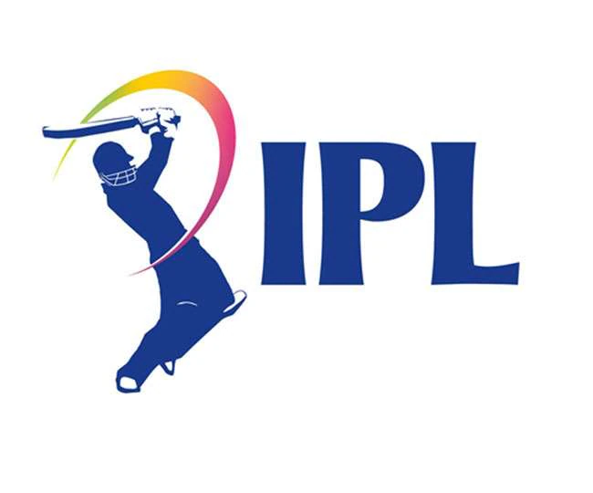
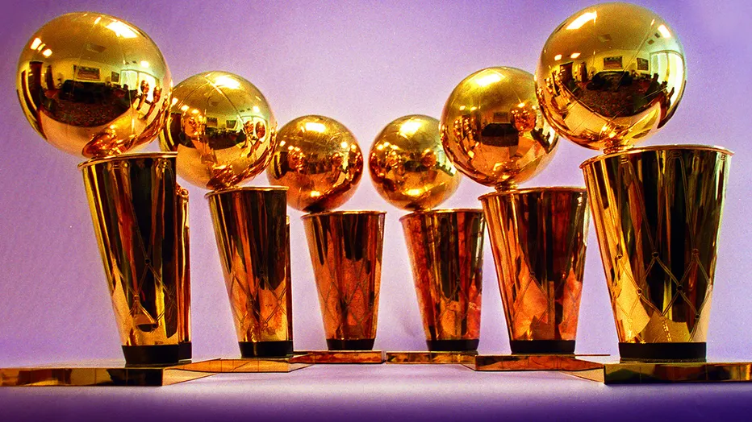
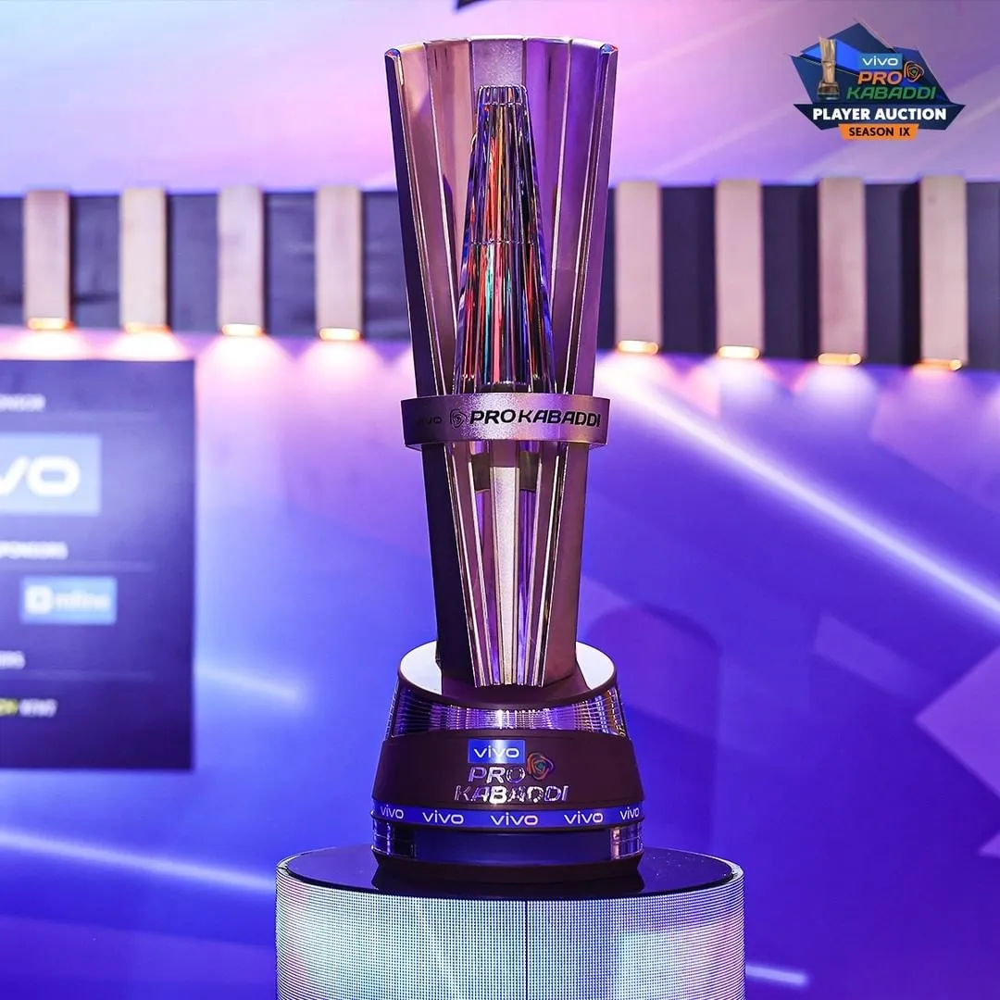
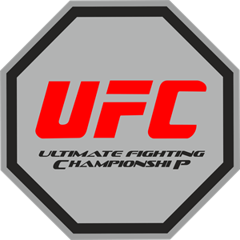
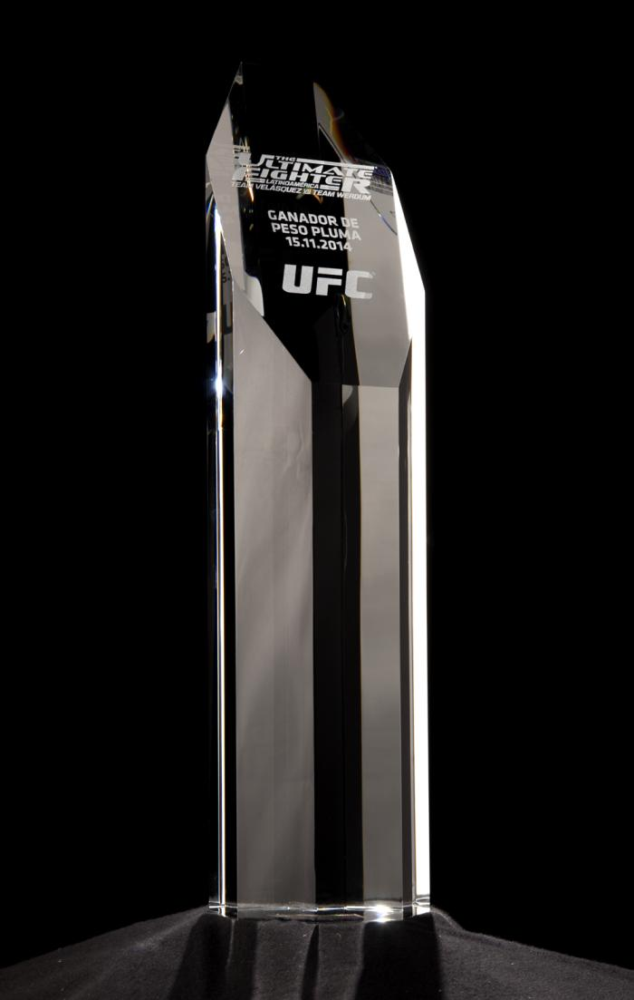
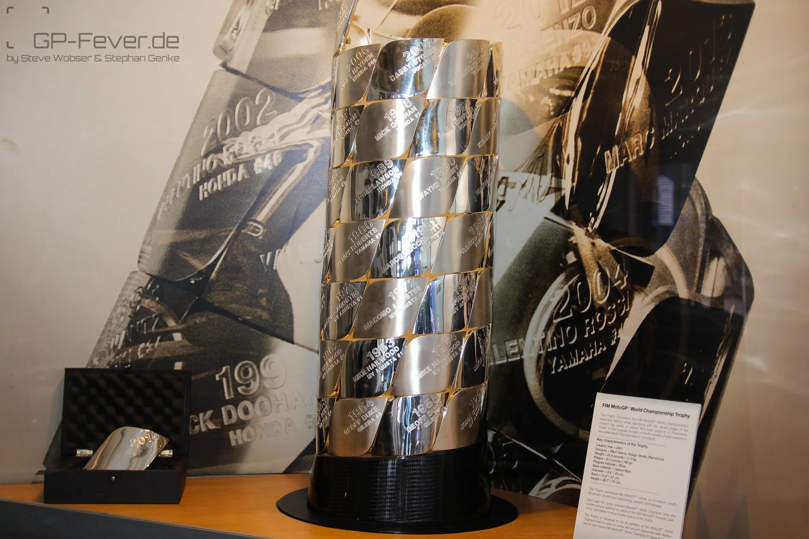

SPORTS LEAGUE MANAGEMENT
SPORTS LEAGUE MANAGEMENT
 IPL(Indian Premier League)

The Indian Premier League (IPL) is a professional Twenty20 cricket league in India. It is one of the most popular and lucrative cricket leagues in the world. The IPL features franchise teams representing various cities in India, and it combines top international cricketers with domestic talent.
Following are some Key details of IPL
- Format: The IPL follows a Twenty20 (T20) format, which is a shorter and more dynamic version of cricket. Each team plays a 20-over match.
- Teams: The IPL typically has ten franchise teams, each representing a different city or region in India. Some of the notable teams include the Mumbai Indians, Chennai Super Kings, Royal Challengers Bangalore, Gujrat Titans, and Rajasthan Royals, among others.
- Players: The league attracts top international cricketers from around the world, as well as India's best domestic talent. It's known for its star-studded lineups.
- Popularity: The IPL is known for its enormous fan following and high TV viewership. It features colorful team logos, cheerleaders, and various entertainment elements during matches.
- Auctions: Teams participate in player auctions before each season to build or revamp their squads. This is a significant event in itself, with high-profile bidding for players.
- Matches: The league features a round-robin group stage followed by playoffs, culminating in a final match to determine the champion of the tournament.
- Economic Impact: The IPL has a significant economic impact, not only for cricket players but also for the Indian economy due to sponsorships, advertising, and tourism.
 FIFA(Fédération Internationale de Football Association)
FIFA(Fédération Internationale de Football Association)

The FIFA World Cup is an international soccer (football) tournament that is held every four years, organized by the Fédération Internationale de Football Association (FIFA). It is one of the most widely watched and popular sporting events in the world.
Here are some key details and facts about the FIFA World Cup:
- Inaugural Tournament: The first FIFA World Cup took place in 1930 in Uruguay, and since then, it has been held every four years except for 1942 and 1946 due to World War II.
- Participating Teams: The tournament typically features 32 national teams from around the world, but the number of teams has varied in the past. Qualification rounds are held in various regions to determine the participating teams.
- Format: The tournament consists of several rounds, including group stages, knockout rounds, quarter-finals, semi-finals, and the final match. The winner of the final is crowned the world champion.
- Trophy: The winning team receives the FIFA World Cup Trophy, which is one of the most coveted and recognizable trophies in the world of sports. The trophy is made of solid 18-carat gold and weighs approximately 13.5 pounds (6.1 kilograms).
- Most Successful Teams: Brazil has won the World Cup a record five times (in 1958, 1962, 1970, 1994, and 2002). Germany and Italy are tied for the second-most titles, each with four World Cup wins.
- Host Countries: The host country for the World Cup is selected through a bidding process. Many countries have had the honor of hosting the tournament, with recent hosts including Russia (2018) and Qatar (upcoming in 2022).
- Fans and Viewership: The World Cup attracts a massive global audience, with billions of people tuning in to watch matches. The event brings together fans from all over the world, fostering a sense of unity and excitement.
 NBA(National Basketbal Association)
NBA(National Basketbal Association)

The National Basketball Association (NBA) is the premier professional basketball league in North America and one of the most popular basketball leagues in the world.
Here are some key details about the NBA:
- Teams: The NBA consists of 30 teams, divided into two conferences: the Eastern Conference and the Western Conference. Each conference is further divided into three divisions.
- Season: The NBA season typically runs from October to April, with each team playing 82 regular-season games. The season is followed by the NBA Playoffs, which determine the league champion.
- NBA Playoffs: The top eight teams from each conference qualify for the NBA Playoffs, a tournament-style competition. The playoffs include best-of-seven series in each round, culminating in the NBA Finals to determine the league champion.
- Global Reach: The NBA has a substantial international following, and it has expanded its global footprint with international players making a significant impact in the league.
- Legends:The NBA has a rich history with legendary players like Michael Jordan, LeBron James, Kobe Bryant, Magic Johnson, Larry Bird, and many more who have left an indelible mark on the sport.
- Cultural Influence: The NBA has a profound cultural impact on music, fashion, and popular culture. Players are often seen as influential figures both on and off the court.
- Team Ownership: NBA teams are owned by individuals, groups, and organizations, including celebrities, industrialists and business figures.
 PKL(Pro Kabaddi League)
PKL(Pro Kabaddi League)

The Pro Kabaddi League (PKL) is a professional sports league in India that focuses on the traditional Indian sport of kabaddi. The league was founded in 2014 and has since gained popularity for its exciting and fast-paced gameplay. Pro Kabaddi League is modeled after other successful sports leagues, such as the Indian Premier League (IPL) for cricket.
Here are some key points about the Pro Kabaddi League:
- Format: The league features city-based franchises, and teams compete against each other in a round-robin format followed by playoffs. The league follows a caravan format, where teams travel to different cities to play their matches.
- Teams: Various teams representing different cities in India participate in the league. These teams include popular ones like the Patna Pirates, Bengaluru Bulls, U Mumba, Jaipur Pink Panthers, and many more.
- Players: PKL attracts top kabaddi talent from India and around the world. It has played a significant role in promoting and developing the sport and providing opportunities for talented kabaddi players.
- Rules: Kabaddi is a contact team sport with two teams of seven players each. The objective is for one player (raider) to cross into the opponent's half, tag as many defenders as possible, and return to their side without being tackled. Defenders aim to stop the raider from returning.
- Seasons: The Pro Kabaddi League is conducted annually, with each season featuring a series of matches that culminate in the playoffs to determine the champion.
- Popularity: The league has gained a considerable following and viewership in India, contributing to the growth of kabaddi as a professional sport.
 Ultimate Fighting Championship(UFC)

The Ultimate Fighting Championship (UFC) is a leading mixed martial arts (MMA) organization, and it's known for being one of the premier promotions in the sport.
Here are some key details about the UFC:
- Fights: The UFC features mixed martial arts contests that allow a wide range of fighting techniques, including striking, grappling, and submissions. Fighters compete inside the iconic octagonal cage known as the "Octagon."
- Events: The UFC hosts numerous events throughout the year, typically consisting of a mix of Fight Nights and pay-per-view (PPV) events, including major shows like UFC 229, UFC 257, and UFC 264.
- Championships: The UFC has multiple weight divisions for both male and female fighters. Champions are determined through title fights, and they are recognized as the best fighters in their respective weight classes.
- Weight Classes: The UFC features a variety of weight classes, including divisions like lightweight, welterweight, middleweight, and heavyweight, as well as lighter and heavier weight divisions for both men and women.
- Global Reach: The UFC has a global fan base and hosts events in different countries. It has attracted fighters from all over the world, contributing to its international appeal.
- Rules and Regulations: The UFC follows a strict set of rules and regulations designed to ensure fighter safety and the integrity of the sport. These rules are enforced by referees and athletic commissions.
 Formula 1(F1)
Formula 1(F1)

Formula 1, often abbreviated as F1, is a highly popular and prestigious international motorsport series that features single-seater open-wheel race cars.The sport continues to evolve, with an emphasis on sustainability, safety, and pushing the boundaries of automotive engineering.
Here are some key details about Formula 1:
- Races: Formula 1 consists of a series of races known as Grands Prix (singular: Grand Prix). These races take place on various circuits, both traditional race tracks and temporary street circuits, in countries around the world.
- Teams: Formula 1 is contested by a set of racing teams, each of which designs, builds, and races its own cars. These teams compete for both the Constructors' Championship and the Drivers' Championship.
- Drivers: Each team fields two drivers and the drivers compete for the Drivers' Championship based on their individual race performances.
- Regulations: Formula 1 has strict technical and sporting regulations that govern everything from car design to race procedures. These regulations are determined and enforced by the Fédération Internationale de l'Automobile (FIA).
- Cars: Formula 1 cars are highly sophisticated, technologically advanced machines. They are designed for maximum speed and performance, with powerful engines, aerodynamic features, and advanced materials.
- Historic Races: Some Formula 1 races are considered iconic, such as the Monaco Grand Prix, the Italian Grand Prix at Monza, and the British Grand Prix at Silverstone.
 MotoGP
MotoGP

MotoGP is the premier international motorcycle racing series for road racing. It features the world's best motorcycle riders competing in various classes on high-performance racing bikes.
Here are some key details about MotoGP:
- Classes: MotoGP consists of several classes, with the most prominent being the MotoGP class. Other classes include Moto2 and Moto3. Each class uses different engine sizes and specifications, with MotoGP being the highest and most powerful class.
- Racing Format: MotoGP races are typically held on weekends and consist of practice sessions, qualifying sessions, and the race itself. Races can vary in length and are known for their intense speed and skillful overtaking maneuvers.
- Championships: Riders compete for the Riders' World Championship, and each motorcycle manufacturer competes for the Constructors' Championship. Both titles are awarded at the end of the season.
- Cultural Impact: MotoGP is not only a sport but also a cultural phenomenon, with a strong fan following and an influence on motorcycle enthusiasts and the motorcycle industry.
- Youth Development: MotoGP has programs to develop young riders, such as the Red Bull MotoGP Rookies Cup and the FIM CEV Repsol championship, providing a pathway for emerging talents.
- Safety: Safety is a paramount concern in MotoGP. Riders wear protective gear, including leather suits, helmets, gloves, and boots. Safety measures such as airbag suits and improved helmet technology are continually developed to protect riders.
© All rights reserved.